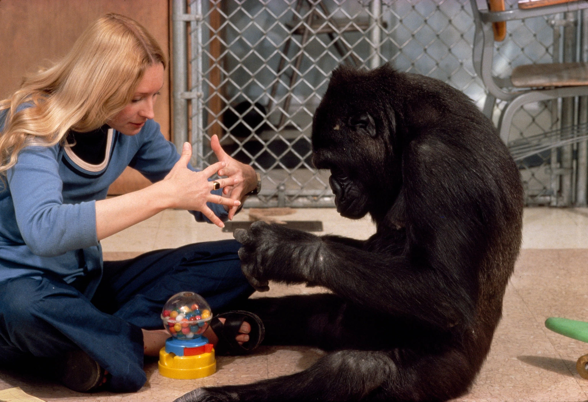

Gorillas (genus Gorilla) are herbivorous apes that inhabit the tropical forests of Africa. Being the largest primate, gorillas are extremely strong, with the intelligence to use and create tools. Their intelligence allows for emotional family bonds. They are social animals who travel in packs led by a gorilla called the Silverback.
